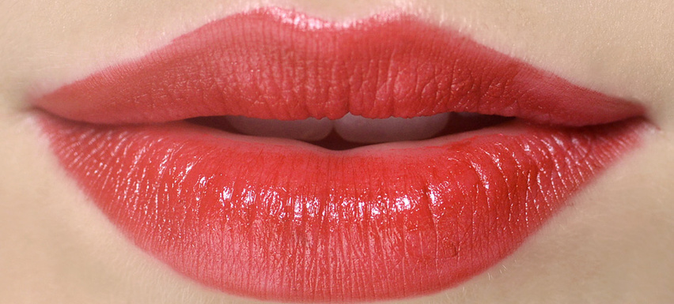

Una mujer moderna esta la mayoría del tiempo corriendo de un lado a otro, de arriba abajo, etc. Por ello es necesario verte bien, nunca sabes con quien te vayas a encontrar o que evento importante pueda sugir. Para ello Belleza matte tiene preparado para ti una lista de útiles consejos que toda mujer debería seguir para verse radiante y espectacular todos los días.
7 remedios naturales para reparar tus labios

1. Mezcla, en un recipiente limpio, una cucharada de aceite de coco con 3 gotas de aceite esencial de hierbabuena, esto sirve para hidratar tus labios y protegerlos del frío y del aire acondicionado.
2. ¿Tienes los labios cuarteados? Toma unos tres (3) pétalos frescos de rosa, lávalos y mézclalos con una cucharada de leche de vaca, hazlo en un procesador de alimentos hasta formar una pasta, póntelos en los labios varias veces al día.
3. ¡Confía siempre en las cualidades del pepino cohombro! Corta una rodaja de pepino y frótala en tus labios, hazlo varias veces en el día y vas a notar como siempre estarán hidratados.
4. Saca los cristales de aloe vera, más o menos una cucharada, mételos en la licuadora y esa pastita póntela como mascarilla en tus labios, déjala unos 15 minutos y enjuaga, es perfecto para revitalizar y sanar.
5. Mezcla media cucharadita de aceite de coco orgánico con media cucharadita de azúcar, póntelo en los labios masajeando suavecito, luego cubre tus labios con película de plástico transparente y déjala por 15 minutos, retira con una toallita de papel y listo.
6. Mezcla ¼ de cucharadita de sales de Epson con unas gotas de aceite esencial de menta, exfolia tus labios con esta mezcla y enjuaga, vas a sentir tus labios revitalizados.
7. Con tu cepillo de dientes vas a ‘cepillar’ tus labios suavemente, justo antes de ponerte tu hidratante, esto prepara los labios y activa la circulación para recibir el producto que te quieras poner y aprovechar todos sus nutrientes.